0Summary
The UREx PDB is a four-layer, 89.8 × 59.7 mm board that turns a 2S pack into a regulated 5 V rail through a TPS552892 buck–boost, switches seven payload rails from an I²C expander, measures battery current with an INA232, and keeps the battery warm with a PTC heater on a closed loop. Its own ESP32 owns the power system and hands telemetry to the comms board from RF-001.
It flew for the first time on BEAR-14 on 30 August 2026 and reached 33.5 km. The bus regulated throughout with no resets. The battery never dropped below 15.1 °C, the stack averaged 3.2 W and used 28% of the measured pack energy, and a 90-minute launch hold was absorbed by switching payloads off from a Wi-Fi page. The flight also found two things to fix: the PDB's Wi-Fi blocked GNSS lock on the pad, and the cutter logic, flown as a dry run, re-arms instead of latching.
1Why build it
Earlier BEAR payloads ran off development boards and point-to-point wiring (FIG. 1). That's hard to inspect, reports nothing about the power system, and gives no way to switch payloads off during the long pad holds that are normal on launch day. BEAR-13 made the cost concrete: its video payload used two-thirds of the pack in 4.9 h, so a longer hold would have flattened the battery before landing.
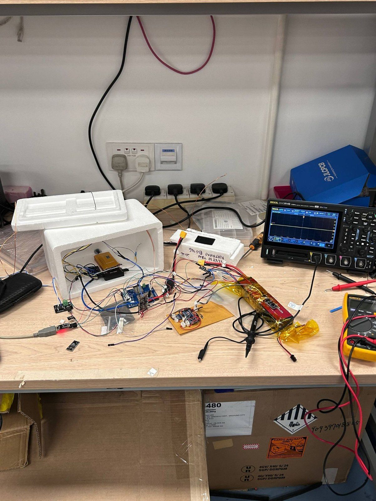
BEAR-14 (NUS TEH HALIA-1) dropped BEAR-13's video and sent SSTV images on 145.670 MHz instead, straight after each APRS frame on the same radio. It also carried a STAR student payload and the new PDB. The camera planned for this flight didn't make it onto the payload.
| Launch | 30 Aug 2026, 00:15 UTC (08:15 local) |
| Callsign | 9V1WP-11 |
| Primary payload | SSTV on 145.670 MHz, STAR student payload |
| Avionics | Comms board (RF-001) + UREx PDB |
| Battery | 2S pack, 5228 mAh measured |
| Peak GNSS altitude | 33 504 m |
| APRS frames recovered | 93.9% (246/262) |
2Requirements
TABLE 2 is the requirement set from the start of the BEAR-14 cycle, with status from the evidence in §6 and §7.
| ID | Requirement | Implementation | Status |
|---|---|---|---|
| R1 | 5 V @ 2 A each to a Raspberry Pi, an SDR and one APRS board (≈6 A peak); allow for a future digital video payload | TPS552892 buck–boost (WEBENCH design, 5 A); three TPS22997 load switches | PARTIAL 15 W on one channel |
| R2 | Current sensing and bus-voltage monitoring | INA232 with 6.8 mΩ shunt on the battery rail | FLOWN |
| R3 | Enable/disable payloads for power cycling and saving | TCA6408A I/O expander on every switched rail; Wi-Fi control page | ON PAD |
| R4 | Battery heating | PTC heater on a TPS1HB08 high-side switch; DS18B20 feedback | FLOWN |
| R5 | Accept 5–18 V input | Buck–boost input range; 16.8 V (4S) design maximum | NOT TESTED |
3Architecture
FIG. 2 is the BEAR-14 stack. Each board carries an ESP32. The PDB's controller (the head) owns the power system: it samples the INA232 and the battery temperature at 1 Hz, runs the heater loop, drives the rail switches through the I/O expander, and pushes a 13-byte packed telemetry struct over I²C to the comms board (the tail) at 0x42. The tail owns the radio and navigation sensors and folds the power telemetry into alternate APRS frames. Splitting it this way means a radio-firmware fault can't leave the rails or the heater in an undefined state, and the PDB can be reused under a different telemetry system.

4Hardware
4.1Power tree
Battery input comes in on an XT30, up to 16.8 V, through a fuse and a series Schottky for reverse-polarity protection, then the 6.8 mΩ shunt, and splits four ways:
- a TPS552892 four-switch buck–boost [4] making 5 V, designed in TI WEBENCH for up to 5 A, with a 4.7 µH (13.6 A sat) XAL7070 inductor and polymer bulk capacitance (330 µF, 16 mΩ ESR), feeding three TPS22997 payload load switches [6];
- two TPS1HB08-Q1 smart high-side switches [7] on the battery rail for inductive loads (VTx, motors, the battery heater), with current limit and diagnostics built in;
- two RSS070N05 N-channel low-side "pyro" channels for resistive loads such as a hot-wire cutter;
- a wide-input 3.3 V LDO running the ESP32 straight off the battery, bypassing the switcher, so the controller can still command and report if the converter dies.
Layer 2 is a split power plane carrying the battery, 5 V and 3.3 V nets (FIG. 3e, FIG. 4). The high-current loop stays on the top layer between shunt, converter and output switches.

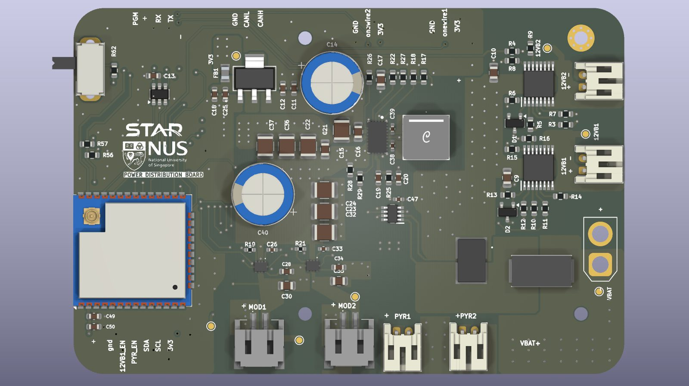

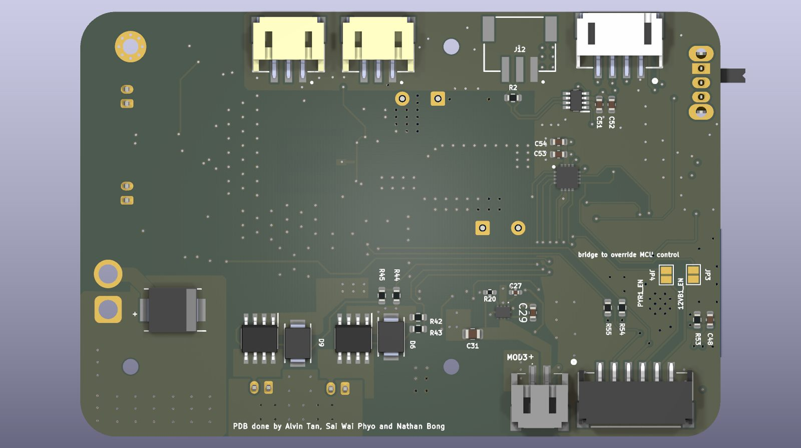

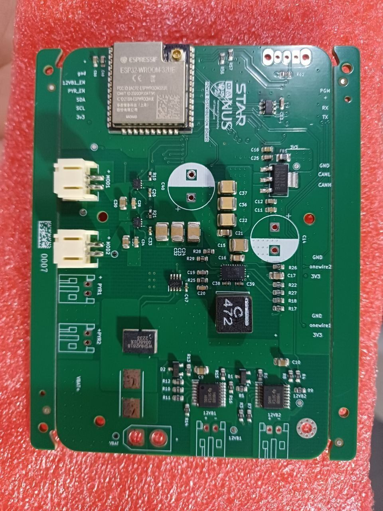

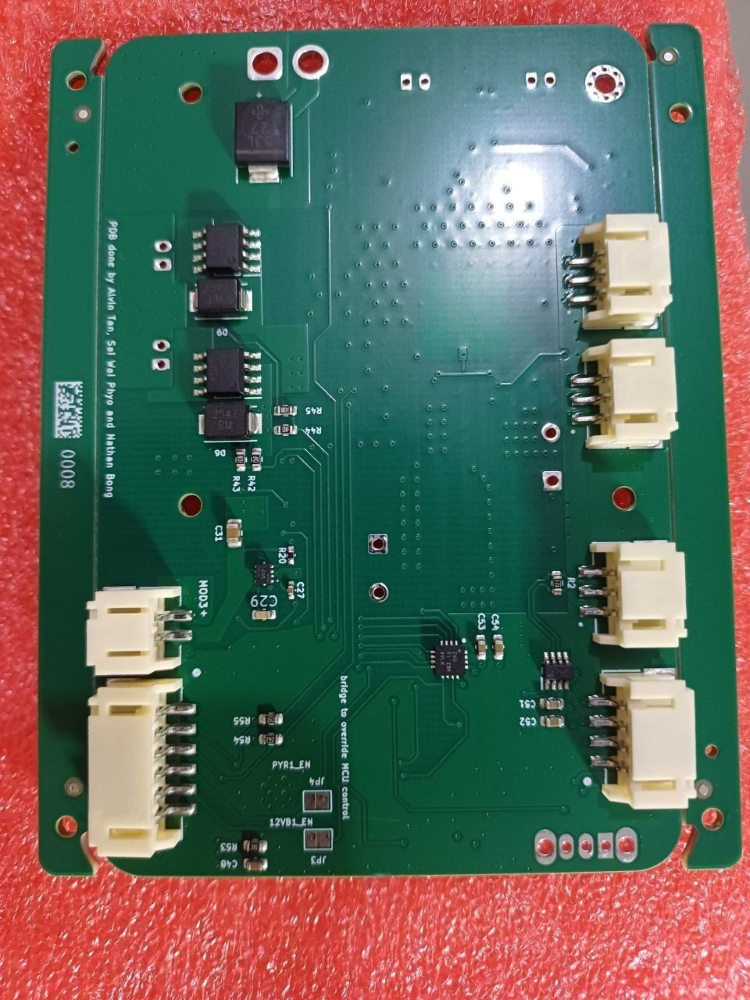

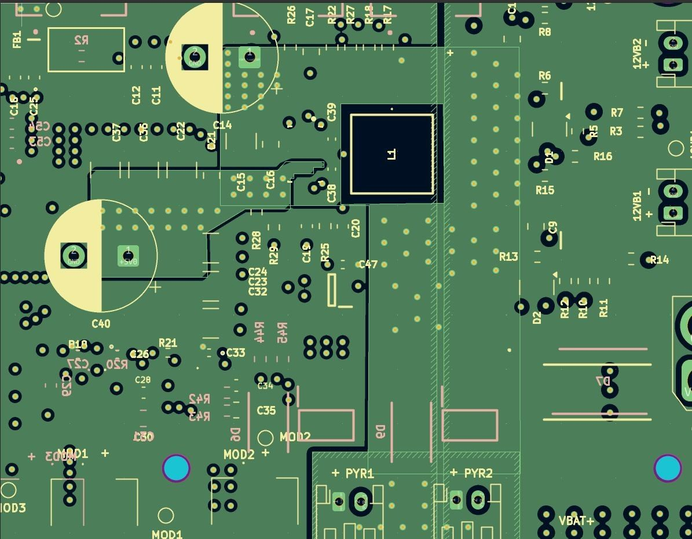

4.2Current sensing
The shunt is sized so the INA232's full-scale input [5] (±81.92 mV at ADCRANGE = 0) lands on the combined current limit of all load switches, \(I_{\max} = 12\,\mathrm{A}\):
A 6.8 mΩ WSHM2818 metal-strip resistor was fitted. With the 2.5 µV shunt LSB that's 0.37 mA resolution. The firmware averages 128 conversions of 8.2 ms, so each reported reading spans about 1 s.1
4.3Load switching and the pad control page
All seven controllable rails hang off a TCA6408A I²C I/O expander: three 5 V buses, the heater, the VTx and two general-purpose channels. The firmware keeps a shadow copy of the output register so automatic heater control and manual commands can flip single bits without stepping on each other. In the nominal flight state (0x38) the three 5 V buses are on and the heater and VTx are off.
On the pad, the head ESP32 runs a Wi-Fi access point with a control page (FIG. 5a) that toggles each rail and shows live bus status. One Enter Flight State action locks the rail configuration and turns the radio off for the rest of the flight. This turned out to matter: BEAR-14 had to hold for 90 minutes, and we switched the payloads off from this page to save the battery, which verified R3 under real conditions.

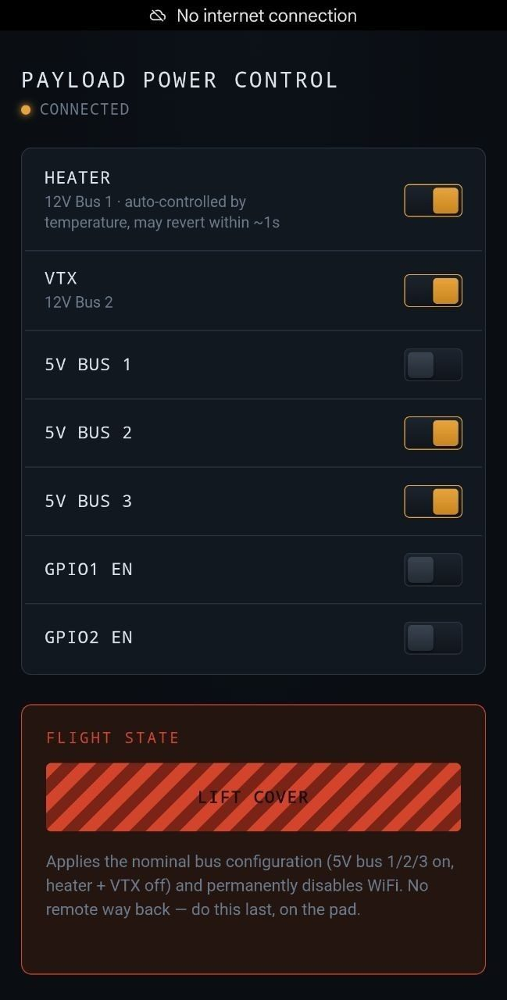

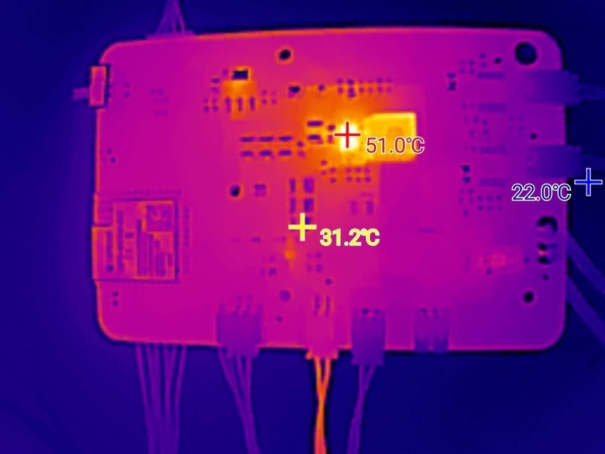
4.4Battery pack and heater
The flight pack is wrapped in polyimide tape with a DS18B20 one-wire sensor and a 60 °C self-limiting PTC heater bonded to the cells (FIG. 6). The controller is bang-bang with hysteresis: heater on at \(T_\mathrm{bat} \le 15\,^\circ\mathrm{C}\), off at \(T_\mathrm{bat} \ge 20\,^\circ\mathrm{C}\), and forced off if the sensor returns the DS18B20 disconnected value (−127 °C), so a sensor fault can't latch the heater on.2

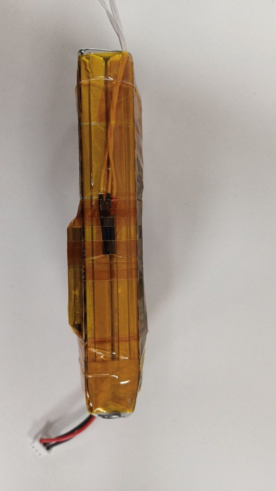

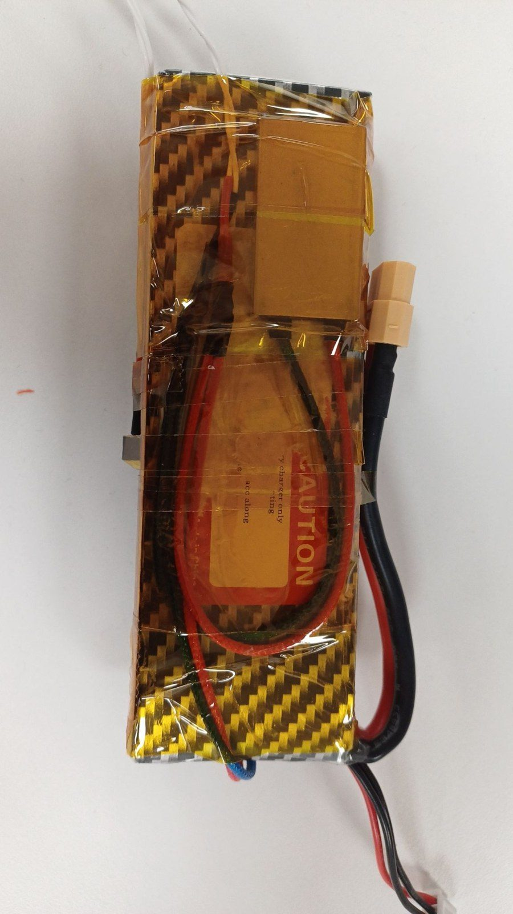

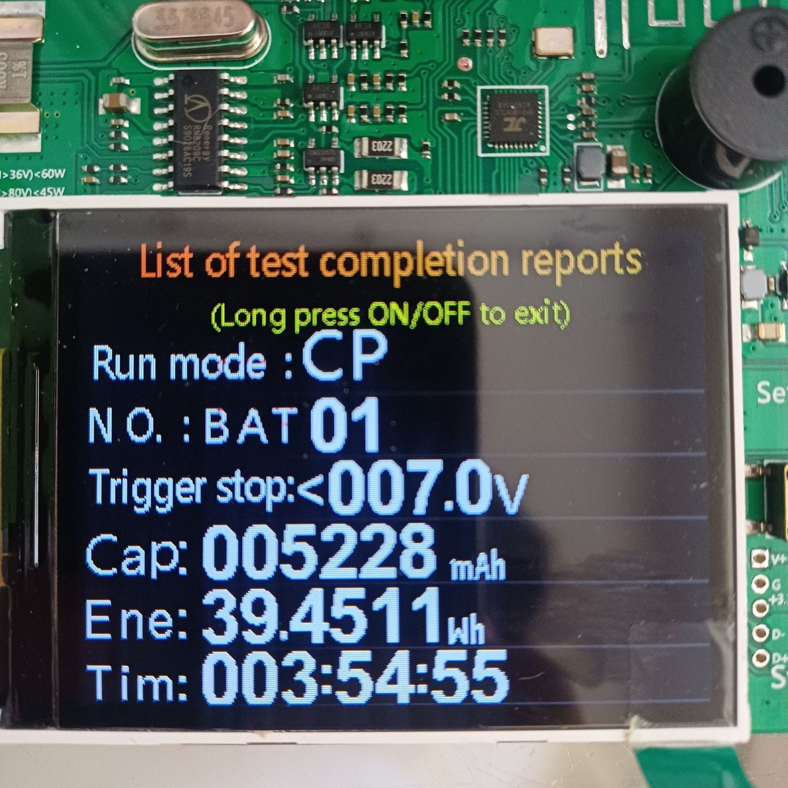
5Firmware: the inter-board link
The PDB writes a packed struct {\(V_\mathrm{bus}\), \(I\), \(T_\mathrm{bat}\), heater state} to the comms board once a second, and the comms board receives it in an interrupt callback [3]. On BEAR-14 the comms board put battery temperature in the field it reserved for a thermocouple on BEAR-13. The struct definitions on the two boards have to match byte for byte, so any change to the telemetry fields must ship to both boards together. That argues for a shared header over two hand-maintained copies.3
6Ground testing
6.1Load test
The PDB was loaded at 15 W constant power (3 A at 5 V) from a 7.2 V supply through one TPS22997 channel, roughly a Raspberry Pi 5 under load. The thermal image (FIG. 5b) shows a hotspot of about 51 °C against a 22 °C background, with a second marked point at 31 °C. The board then ran a Pi 5 through one load switch without brown-out. So R1 is only partly verified. The full 5 A converter rating, all three channels loaded at once, and the 5 V and 16.8 V ends of the input range were not tested, and converter efficiency wasn't measured.
6.2Battery conditioning
Before flight the pack went through three cycles of: discharge to cut-off, 30 min rest, full recharge, 30 min rest. The final discharge delivered 5228 mAh and 39.45 Wh (FIG. 6c), an average of 7.55 V, consistent with a healthy 2S pack. That's the energy budget used in §7.1.
6.3Integration

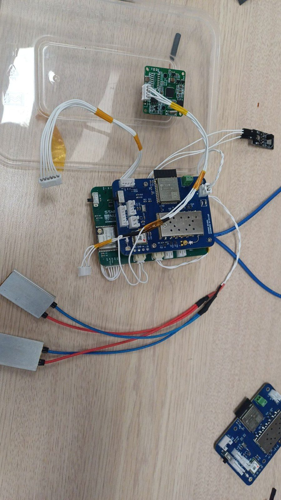

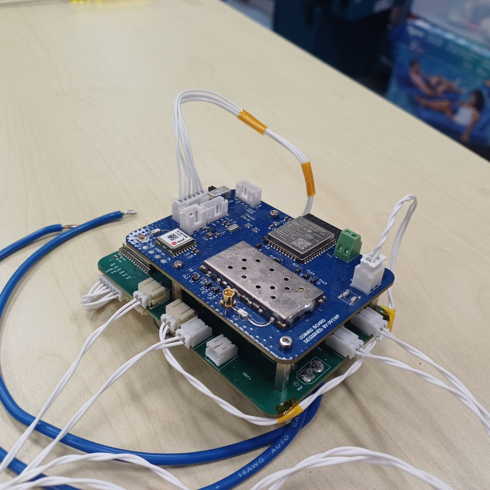

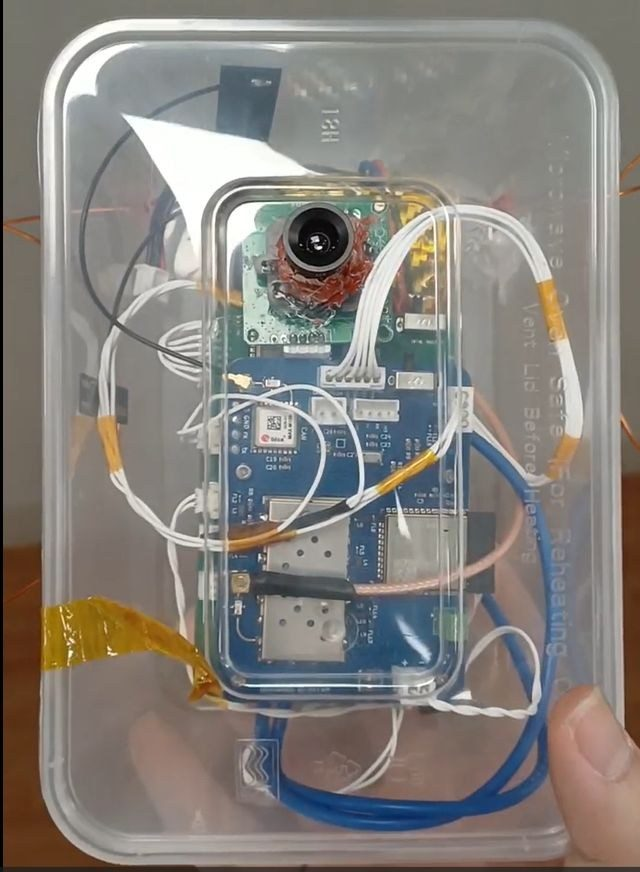

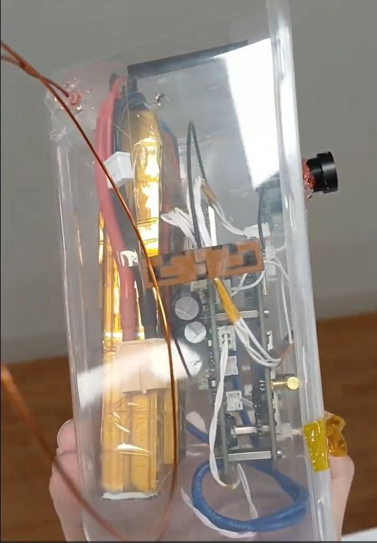
7Flight results
The data are aprs.fi exports of every frame the APRS network received from 9V1WP-11, with one-second timestamps [3]. BEAR-13 is shown alongside for comparison; its trajectory and method are in RF-001 §6. BEAR-14 climbed at a steady 3.71 m/s to a natural burst at 33.5 km, and its last fix was 28.9 km from the launch site, over the southern Singapore Strait.
7.1Power
FIG. 8 shows bus voltage, current and altitude. Energy and charge in TABLE 3 are trapezoidal integrals of \(V \cdot I\) and \(I\) over every power frame, including the pre-launch hold. Current is sampled only about every 70 s, so short events such as transmit bursts are undersampled. Treat the integrals as estimates of average consumption.

| Parameter | BEAR-14 (2S, PDB) | BEAR-13 (3S, for reference) |
|---|---|---|
| Bus voltage, launch → last frame | 8.05 → 7.62 V | 12.25 → 11.27 V |
| Per-cell voltage at last frame | 3.81 V | 3.76 V |
| Current, median / mean / max | 0.38 / 0.42 / 1.73 A | 0.59 / 0.72 / 1.84 A |
| Logged span | 3.5 h | 4.9 h |
| Charge drawn | 1.44 Ah | 3.41 Ah |
| Energy drawn | 11.3 Wh | 40.1 Wh |
| Mean power | 3.2 W | 8.1 W |
| Fraction of pack capacity used | 28% of 5.23 Ah | 66% of 5.2 Ah |
Without a video payload the stack averaged 3.2 W and used under 30% of the conditioned pack. The bus sagged only 0.43 V over the flight, the buck–boost regulated throughout, and the continuous frame counter shows no brown-out or reset. Splitting the current samples at 0.8 A gives 1.23 A with the heater on and 0.33 A with it off. The heater therefore draws about 0.90 A, or 7.1 W at 7.9 V. It was on in 9.8% of power frames, an average heating power of ≈0.7 W.
7.2Thermal

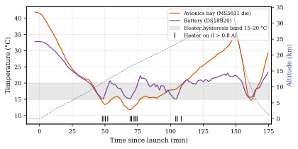

The battery fell from 33 °C at launch into the 15–20 °C control band at about 9 km and stayed there for the rest of the ascent, with a minimum of 15.1 °C (FIG. 9a). Three groups of heater activations near 50, 70 and 105 min line up with recoveries in battery temperature: the loop closed as designed. The avionics bay, read from the MS5611 die, bottomed at 11.8 °C at 16.2 km near the tropical tropopause, then recovered to 34 °C near burst as solar heating rose in the thin stratosphere.
At 18.7 km the BEAR-13 bay was at −1.6 °C, about 18 K colder than BEAR-14's 16.0 °C (FIG. 9b). Part of that difference is enclosure design and launch time (06:51 against 08:15 local), so not all of it goes to the heater. But the battery stayed above the bottom of the control band through the coldest part of the flight, which is what R4 asks for, so R4 is verified.
7.3Telemetry link and SSTV
The APRS network recovered 93.9% of BEAR-14's frames (FIG. 10). The largest outage was eight frames (about 4.5 min) between 1.2 and 3.0 km, just after launch. The counter ran on without a reset, so the payload kept transmitting and the frames were lost on the receive side, consistent with poor low-altitude iGate coverage near the launch site. One more two-frame gap occurred at 23.7 km. The radio ran the module's 0.5 W setting, and this result suggests little to gain from high power given its current cost.

The SSTV frame in FIG. 11 was sent at 02:40 UTC from 32 874 m, three minutes before burst, with the telemetry overlaid on board.

8Anomalies
| # | Anomaly | Evidence / cause | Corrective action |
|---|---|---|---|
| A1 | PDB Wi-Fi prevents GNSS lock on the pad | Seen at the ESP32 default of 20 dBm despite the BFCN-1575+. Likely front-end compression from a strong 2.4 GHz signal on an antenna a few centimetres away, which the filter can't reject enough of, rather than in-band emission. | Cut Tx power (WiFi.setTxPower); move pad control to BLE; separate the antennas; enter flight state before GNSS acquisition. |
| A2 | Cutter re-arms instead of latching | C:C in all 11 power frames above 30.2 km. The altitude check re-asserts the cut on every pass while above the set point, and the blocking transmitter resets the 15 s cut timer. A live cutter would have fired repeatedly. | One-shot latched cut with a "fired" flag; add a mission timer and barometric backup; keep the Tx-inhibit guard. |
| A3 | Sensors starved during SSTV | Sensors and the cutter aren't serviced during the blocking 36 s SSTV transmission. | Generate SSTV audio by DMA (I2S/DAC) or move to FreeRTOS tasks. |
| A7 | PDB errata | Battery one-wire port unreliable; INA228/230/232 inconsistency in code; a single 0x38 flight mode. | Next board revision; shared telemetry header; explicit mode state machine. |
A2 is the most safety-relevant. A flight-termination system is part of the conditions under which these flights are cleared with aviation authorities. A cutter that cycles at the radio's duty cycle could, with the output live, pull repeated pulses from the pyro channel and inhibit telemetry while doing it. We only saw it because BEAR-14 deliberately flew the cutter as a dry run, with the output disabled and the flag in telemetry. That was the right call, and it should be repeated after the fix and before the output is re-enabled.
9What's next
On its first flight the PDB regulated the payload bus, reported battery voltage and current throughout, held the battery at or above 15 °C through the tropopause, let us switch payloads off during a 90-minute pad hold, and used under 30% of the measured pack energy. In priority order for the next iteration:
- fix the cutter logic (A2) and repeat the dry run before enabling the output;
- remove the Wi-Fi/GNSS conflict (A1), preferably by moving pad control to Bluetooth LE;
- move the comms firmware to a task-based RTOS with non-blocking SSTV (A3);
- finish characterising the PDB: efficiency over the 5–16.8 V input range, three channels at full load, and the TPS1HB08 current-limit behaviour;
- bring up the spare CAN interface on both boards, so new payload boards can join the stack without point-to-point wiring.
—Acknowledgements
Thanks to the NUS Satellite Technology and Research Centre for programme support under UREx; BEAR (9V1FH, 9V1LW, 9V1CV, 9V1YP) for launch, rigging, ground support and regulatory work; Bumblebee Autonomous Systems NUS; and RSAF 203 Squadron, CAAS and IMDA for flight and spectrum approvals.
SSources and originals
| Source | Format | Note |
|---|---|---|
| BEAR-14 NUS TEH HALIA-1 | Google Slides | The original BEAR-14 deck |
| star-avionics-stack-report.pdf | PDF, 26 pp | UREx report covering both flights |
| star-avionics-stack-report-latex.zip | LaTeX + Python | Report source and the scripts that regenerate every number here |
| power_stuff | KiCad | PDB schematic, layout and BOM |
| BEAR13_FIRMWARE | Arduino + CSV | Firmware for both boards and raw aprs.fi exports |
RReferences
- [1]S. W. Phyo, A. Tan, N. Bong, power_stuff: UREx power distribution board, GitHub, 2026. github.com/RandomAerospace/power_stuff
- [2]S. W. Phyo, COMMS-BOARD: APRS + GNSS board with hot-wire and FPV camera control, GitHub, 2026. github.com/RandomAerospace/COMMS-BOARD
- [3]S. W. Phyo, BEAR13_FIRMWARE: HAB telemetry and power firmware, with flight data, GitHub, 2026. github.com/RandomAerospace/BEAR13_FIRMWARE
- [4]Texas Instruments, TPS552892 Wide-Input Buck-Boost Converter, datasheet.
- [5]Texas Instruments, INA232 High- or Low-Side, Bidirectional Current and Power Monitor, datasheet.
- [6]Texas Instruments, TPS22997 Single-Channel Load Switch, datasheet.
- [7]Texas Instruments, TPS1HB08-Q1 Automotive Single-Channel Smart High-Side Switch, datasheet.
AAppendix: schematic sheets
Full schematics are in the repository [1]. Sheets are vector; tap one to open it full size.


ΔRevisions
| Rev | Date | Change |
|---|---|---|
| A | 2026-10-26 | First issue, from the BEAR-14 deck and the October 2026 UREx report. |